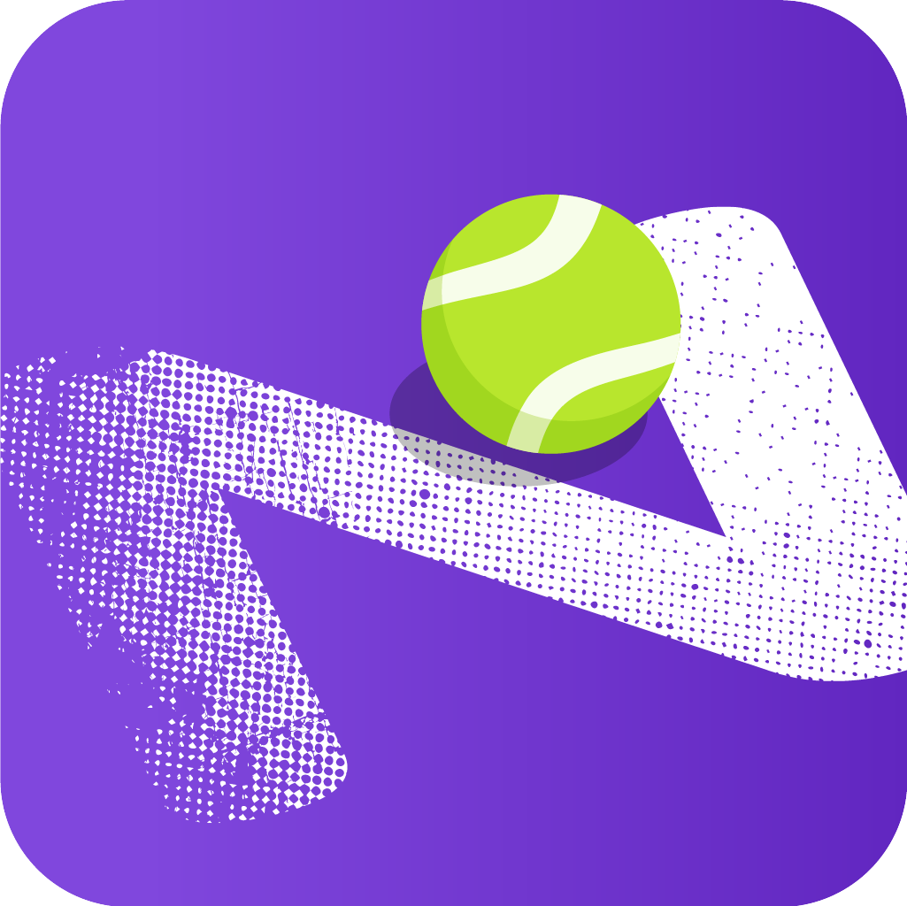

完整分析回放
骨架与球拍识别样例
样例视频尚未生成
请先运行完整姿态与球拍渲染任务，再刷新此页面。
这是模型原始输出，没有人工修正；遮挡和远端小目标处可能出现抖动或短时误识别。

Netcast TennisVisionCOURT INTELLIGENCE完整 57.9 秒样例。人体骨架、球拍五点、网球位置、球场与落点小地图已经写入视频帧，因此浏览器全屏、画中画或下载后播放都不会丢失分析标记。